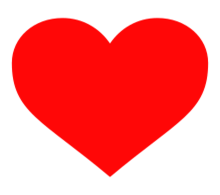

Um pouco sobre ela
Ela, a primeira vista, parece ser uma mulher muito inteligente, poderosa e durona, mas quando voce a conhece, ve que é o extremo oposto, meio sonsinha e muito fragil e sentimental
A primeira impressao
Quando a vi pela "primeira vez", nao achei a tao especial e diferente, apenas linda, mas conforme a noite foi passando, fui conhecendo seu jeito louco e divertido, tao unico de ser, sempre vou me lembrar "olha o sol"
Esta é o amor da minha,a pessoinha que me tira do eixo todos os dias,de alguma forma ela tira.
Motivos para amar ela ❤
Esta mulher consegue voce viver momentos cheio de sentimentos a todo instante, seja emoçao ruim ou emoçao boa, essa diva consegue te manipular(fela)
Estou fazendo este site tanto para aprender mais e tambem para tentar tirar um sorrisinho bobo do meu momo, meu nenem
A musica abaixo foi a unica que eu consegui pensar, perdao!!!
Espero que tenha gostado amor eu te amo dms (coraçao)